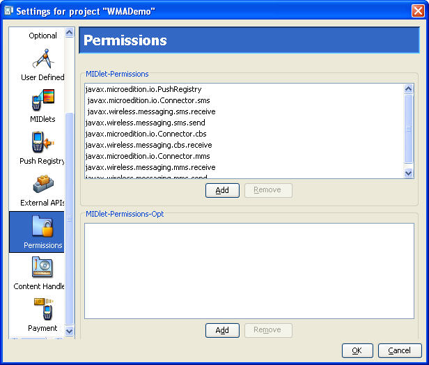
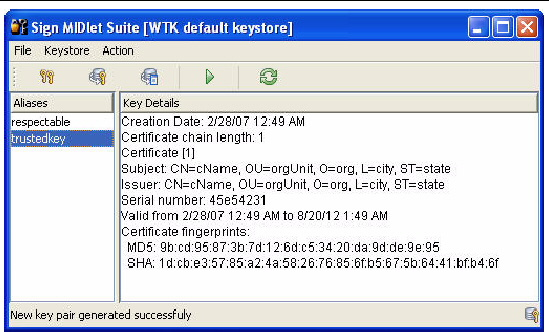
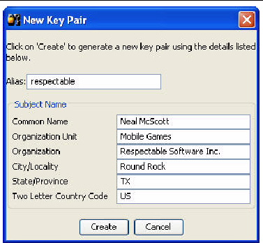
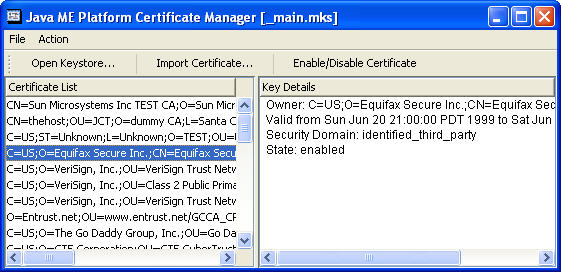

| Sun Java Wireless Toolkit for CLDC User's Guide |
| Sun Java Wireless Toolkit for CLDC User's Guide |
| C H A P T E R 6 |
|
Security and MIDlet Signing |
MIDP 2.0 (JSR 118) includes a comprehensive security model based on protection domains. MIDlet suites are installed into a protection domain that determines access to protected functions. The MIDP 2.0 specification also includes a recommended practice for using public key cryptography to verify and authenticate MIDlet suites.
For definitive information, consult the MIDP 2.0 specification. For an overview of MIDlet signing using the Sun JavaTM Wireless Toolkit for CLDC, read the article Understanding MIDP 2.0's Security Architecture, which is available at
http://developers.sun.com/techtopics/mobility/midp/articles/permissions/
If you need more background on public key cryptography, try the article MIDP Application Security 1: Design Concerns and Cryptography, which is available at
http://developers.sun.com/techtopics/mobility/midp/articles/security1/
This chapter describes support for protection domains, permissions, and MIDlet signing in the Sun JavaTM Wireless Toolkit for CLDC.
MIDlets must have permission to perform sensitive operations, such as connecting to the network. Permissions have specific names, and MIDlet suites can indicate their need for certain kinds of permissions through attributes in the MIDlet suite descriptor.
You can add these permission attributes to a project by clicking the Settings button. Select the Permissions icon. The MIDlet-Permissions box shows permissions which the MIDlet must possess, while the MIDlet-Permissions-Opt box contains permissions that are optional.
FIGURE 6-1 MIDlet Suite Permissions

To add a permission to either box, click Add and choose the permission you want to add. To remove a permission, highlight it and click Remove.
The Sun JavaTM Wireless Toolkit for CLDC supports the security policies defined by both JSR 185 (Java Technology for the Wireless Industry) and JSR 248 (Mobile Service Architecture or MSA). The protection domains are further described in Section 6.2.1, MSA Protection Domains and Section 6.2.2, Java for the Wireless Toolkit Industry Protection Domains.
To choose the security policy you want the emulator to use, select Edit > Preferences and select Security in the Category list. From the Security Policy combo box, choose either MSA or JTWI. Select one of the available security policies.
When you use Run via OTA. your packaged MIDlet suite is installed directly into the emulator and it is placed in a protection domain at installation time. The emulator uses public key cryptography to determine the protection domain of installed MIDlet suites.
If the MIDlet suite is not signed, it is placed in the default protection domain. The default is different for MSA and JTWI. See Sections 6.2.1 and 6.2.2. If the MIDlet is signed, it is placed in the protection domain that is associated with the root certificate of the signing key's certificate chain.
For example, suppose Respectable Software, a hypothetical company, wants to distribute a cryptographically signed MIDlet suite. Respectable Software buys a signing key pair from Super-Trustee, a hypothetical certificate authority. Using the signing key, Respectable Software signs the MIDlet suite and distributes their certificate with the MIDlet suite. When the MIDlet suite is installed on the emulator or on a device, the implementation verifies Respectable's certificate using its own copy of Super-Trustee's root certificate. Then it uses Respectable's certificate to verify the signature on the MIDlet suite. Assuming everything checks out, the device or emulator installs the MIDlet suite into the protection domain that is associated with Super-Trustee's root certificate, most likely identified_third_party.
The toolkit provides tools to sign MIDlet suites, manage keys, and manage root certificates.
The toolkit supports five protection domains for MSA:
When you press the Run button to run your application in the emulator, your code runs in the unidentified_third_party protection domain by default.
The Sun Java Wireless Toolkit includes four protection domains:
When you press the Run button to run your application in the emulator, your code runs in the untrusted protection domain by default.
To sign a MIDlet suite, you must package it first (select Project > Package). Then choose Project > Sign. The signing window appears (FIGURE 6-2).
FIGURE 6-2 MIDlet Suite Signing Window

Select the key you want to use in the Alias List and click the Sign MIDlet Suite button (the green triangle).
The MIDlet signing window can also be used to manage keys. For test purposes, you can create a key pair to sign a MIDLet. To deploy on a device, you must obtain a signing key pair from a certificate authority recognized by the device. You can also import keys from an existing Java SE platform keystore.
To create an entirely new key pair, click New Key Pair. The toolkit prompts you for a key alias and information that will be associated with the key pair.
FIGURE 6-3 Creating a New Key Pair

After you click Create, the toolkit prompts you to choose a protection domain. The connection between the key pair you just created and a protection domain might seem oblique, but it makes perfect sense:
Now imagine what happens when you install a MIDlet suite signed with your new key:
The ability to create a key pair and sign a MIDlet within the Sun JavaTM Wireless Toolkit for CLDC environment is for testing purposes only. When you run your application on an actual device, you must obtain a signing key pair from a certificate authority recognized by the device.
The procedure for signing MIDlet suites with real keys works this way:
In the Sun JavaTM Wireless Toolkit for CLDC, you can do this by pressing New Key Pair in the MIDlet signing window, as described above.
2. Generate a Certificate Signing Request (CSR).
a. Press Generate CSR in the signing window.
b. To change the location of the CSR file, enter a new path or press Browse and choose a new file location.
c. Press Create to write the CSR file.
After the CSR is written, a message that indicates success appears.
3. Send the CSR to a certificate authority (CA).
The CA needs more information from you to verify your identity. You must also pay the CA for the certificate they generate for you.
Once the CA verifies your identity and taken your money, it sends a certificate that certifies your public key.
4. Import the certificate into the Sun JavaTM Wireless Toolkit for CLDC by pressing Import Certificate... in the MIDlet signing window.
You can now use your own private key to sign MIDlet suites. The Sun JavaTM Wireless Toolkit for CLDC takes care of the details of placing the signature and your certificate into the MIDlet suite.
You might have keys in a Java SE platform keystore that you would like to use for MIDlet signing. In this case, you need to import your signing keys to the Sun JavaTM Wireless Toolkit for CLDC so that you can sign your MIDlet suite. To do this from the MIDlet signing window, click Import Key Pair. Select a file that contains a Java SE platform keystore. You are prompted to select the alias of the key pair you want to import, then you just supply the alias you want to identify the key pair once it is imported to your keystore. Finally, you must select a protection domain for the key pair's root certificate.
To remove a key pair from the MIDlet signing window, select its alias and choose Action > Delete Selection.
This section describes how to manage the emulator's list of root certificates using the Sun JavaTM Wireless Toolkit for CLDC.
Real devices have similar lists of root certificates, although they cannot usually be modified by the user. When you want to deploy your application on a real device, you must to use signing keys issued by a certificate authority whose root certificate is present on the device. Otherwise, the device is unable to verify your application.
While you're developing your application, the toolkit's certificate management utility provides a convenient way to manipulate the emulator's list of root certificates for testing purposes.
Choose File > Utilities. Select Manage Certificates and press Launch to open up the certificate manager window. The micro keystore, _main.mks is displayed. This keystore resides in the appdb directory.
The appdb directory also contains keystore.ks and serverkeystore.ks. The Java ME Platform Certificate Manager cannot open *.ks files, but you can import certificates from these keystores as described in Section 6.5.2, Importing Certificates.
FIGURE 6-4 Certificate Manager

Each certificate is shown as a single line in the left part of the window, the Certificate List. When you click a certificate, its details are shown in the right part of the window along with the certificate's associated protection domain.
Certificates can be enabled or disabled. This is handy if you want to make certificates temporarily unavailable without removing them from the keystore. To enable or disable a certificate, select it in the list and press Enable/Disable Certificate. The toolkit asks you to confirm the action. Choose Yes to proceed.
You can import certificates either from certificate files or from Java SE platform keystore files.
To import a certificate from a file, click Import Certificate in the certificate manager window. After you locate the certificate file, choose which protection domain is associated with the certificate.
To import a certificate from a Java SE platform keystore, choose Action > Import Java SE Certificate from the menu in the certificate manager window. First, choose a protection domain for the certificate. Then select the keystore file and enter the keystore password. Finally, select the alias for the certificate you wish to import.
To remove a certificate from the list, select the certificate and choose Action > Delete Selection.
A USB token provides portable password-protected storage for public and private keys and certificates. The Java SE PKCS#11 native interface supports access to a USB token that has a PKCS#11-compliant native driver. When the driver is installed, a PKCS#11 library is included. On Windows the library is a win32 DLL.
This section provides sample instructions for installing and using a USB Token on the Windows platform.
| Note - Linux is not supported because we have not fully tested a USB token with a Linux driver. USB tokens might work on Linux if a PKCS#11-compliant native driver is available. |
The remainder of this section steps through the installation and setup process required for USB token support.
1. Go to http://downloads.geotrust.com/TCSPIKEY0407203016.exe
2. When the File Download dialog box opens, click Save.
Note the directory where you save the executable.
3. Select the executable and double-click to start the Crypto Token installation.
Follow the installation prompts. insert the token so you can complete the installation.
4. The Windows New Hardware Wizard launches.
Follow the instructions, accepting all default actions.
5. When the Wizard finishes, answer Yes to restart your computer.
|
This step is valid only for new USB tokens. All USB tokens arrive with the default passphrase, PASSWORD (all upper case). You should reset this PassPhrase.
1. Click Start on your Windows task bar. Select All Programs > GeoTrust Token, > iKey 2000 Series Software > PassPhrase Utility.
You are prompted to input your "old passphrase" before you can input your new one.
GeoTrust and Cingular recommend making your passphrase a combination of at least eight mixed characters.
|
Go to the GeoTrust driver installation directory. Run CIPUtils.exe to manage the content of USB token.
The Sign MIDlet Suite dialog provides access to the USB token. With the USB token attached and the driver installed, select File > Load keystore > from USB Token (or, type Ctrl -T). If the USB token is password protected, you are prompted to enter a password. When the token is properly loaded all aliases and key details are listed. You can then select keys and use them for signing as described in Section 6.3, Signing a MIDlet Suite.
When you attempt to load a keystore from the USB token you might see an error message.
| Sun Java Wireless Toolkit for CLDC User's Guide |
Copyright © 2007, Sun Microsystems, Inc. All Rights Reserved.
 Resetting the USB Token Passphrase
Resetting the USB Token Passphrase